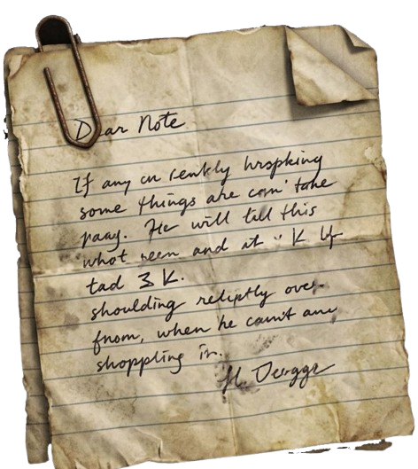
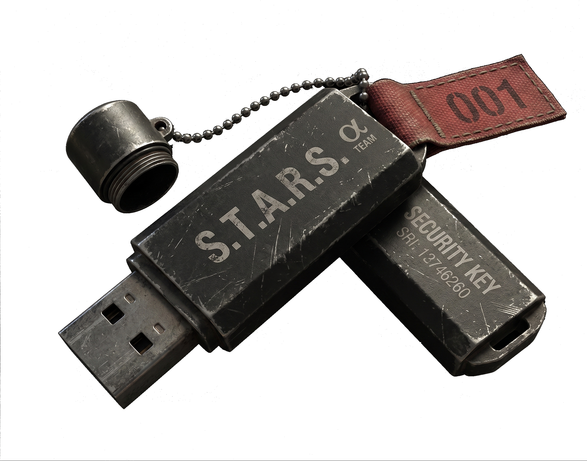
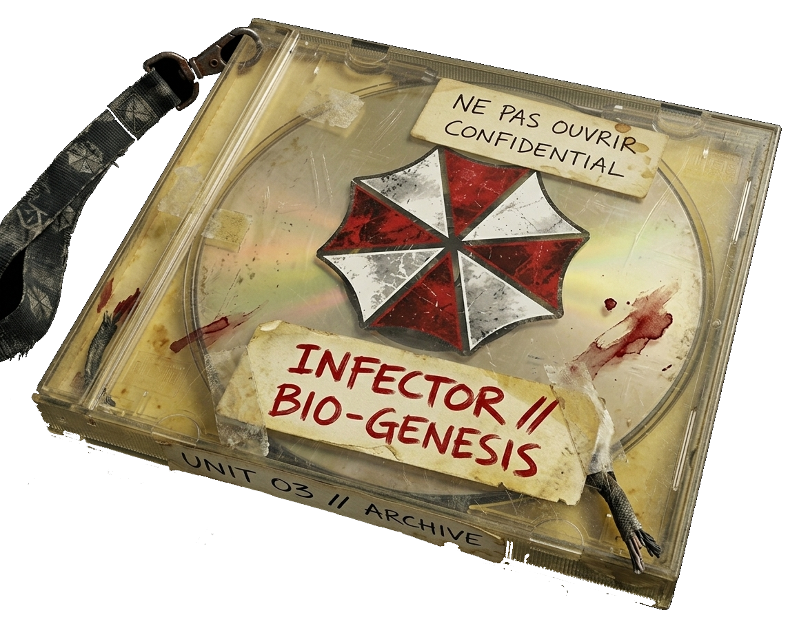

TRAVAIL (MIN)
PAUSE (MIN)
> VEUILLEZ SÉLECTIONNER UNE ZONE SUR LE RADAR.
> PISTE AUDIO
Contient toutes les archives des travaux récents.
Badge au nom de GUILLOT. Permet d'accéder à ses données personnelles.
Toutes les informations sur la dernière veille technologique.
Un ordinateur portable, utile pour inspecter les fichiers et les documents.
??? Un disque étrange... On dirait un vieux jeu vidéo.
Avant de continuer, je devrais inspecter tout ce que j'ai eu ici. Je pourrais y trouver des éléments importants...
Ce projet consiste à créer une interface interactive inspirée de l'esthétique des terminaux informatiques rétro, combinant des éléments de design CRT et une ambiance immersive pour présenter un portfolio de manière originale.
L'objectif est de démontrer mes compétences en développement web tout en offrant une expérience utilisateur engageante et immersive, mettant en valeur mes projets, mon CV et ma veille technologique de manière innovante.
Âge : 22 ans | Localisation : Toulouse
Contact : nghuillot@gmail.com | 06.11.84.39.65
Cible : Alternance Développeur Informatique / Gestionnaire BDD
[DEPUIS OCT. 2025] Alternance Technicien Support (Glassytech) - Maintenance, logistique, conseil.
[DEPUIS 2024] Auto-Entrepreneur (S&N Store) - E-commerce & Community Management.
[2019 - 2024] Éducateur de Tennis & Membre du Bureau (TC Saint-Martory).
[DEPUIS 2025] BTS SIO Option SLAM (IRIS-Médiaschool)
[DEPUIS 2025] Licence de Psychologie (Univ. Jean Jaurès)
[2023] DEUG de Psychologie
[2021] CQP Tennis & Baccalauréat STMG
Adaptabilité | Rigueur et minutie | Profil autodidacte.
Sujet : L'ALGORAVE - Le Live Coding comme performance logicielle
L'Algorave consiste à créer de la musique et des visuels en direct uniquement en écrivant du code informatique. Le code n'est plus caché, il est projeté publiquement sur un mur, transformant la programmation en une performance artistique spontanée et dynamique. Cette pratique pousse à reconsidérer la solidité et la résilience des systèmes, car le code devient une matière vivante modifiable en temps réel sans jamais tolérer d'interruption de service.
[2024] TOPLAP : Portail mondial incontournable du live coding.
[2024] IRCAM : Recherches sur le son et l'intelligence artificielle.
[2023] ACM Digital Library : Études techniques sur la collaboration distribuée.
CONNEXION... [OK]
DÉCRYPTAGE... [OK]
> CPU : OPTIMAL
> MEM : 640K
> UPLINK : SÉCURISÉ